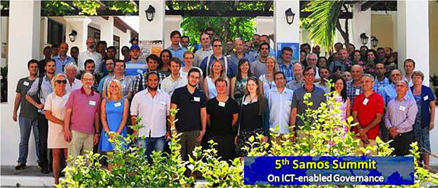

The Share-PSI project: Samos Summit hosts our first workshop
Earlier this month I attended the 5th Samos Summit, which was co-organised by the University of Aegean, the Share-PSI 2.0 project and two policy-focused projects; NOMAD and EU-Community.

Share-PSI is a thematic-network which includes 44 partners from 25 countries across Europe, of which the ODI is a member. It’s mission is to exchange experience, challenges, successes, and, develop ideas and consider potential best practice around implementing open data policies in the public sector. Our project partners include representatives from government departments, commercial organisations, academic and research institutions, as well as standards bodies, trade associations and interest groups.
The Samos Summit hosted our first workshop; "Uses of Open Data Within Government for Innovation and Efficiency". Our technical coordinator, Phil Archer from the W3C, has provided detailed information about this workshop on our call for participation (CfP).
I attended to present the paper I co-wrote with Tom Heath earlier this year, a case study on “Open Crime and Justice Data in the UK” which outlines the policing context in the UK; the evolution and development of the Police.uk and Data.police.uk sites; and discusses the journey in providing such open data, the processes involved and challenges encountered.
Other sessions in the Summit included:
- Bart Van Leeuwen explained his Experiences with Open Data in the Fire Department, outlining both the opportunities and threats that open data can bring to fire fighting, particularly in understanding risks and decision making.
- Julia Hoxha spoke about how the Open Spending in Albania project has provided access to public procurements and spending, and how it is hoped that transparency and civic engagement will tackle the risk of ongoing corruption and regulatory abuse.
- Martin Alvarez-Espinar discussed the developments made in Public Transport Data in the City of Gijon, Spain a project driven by the launch of Gijon City Council’s open data initiative, which included not only bus timetables, but also geolocation data of bus stops and real-time information of coaches moving throughout the city.
- Noël Van Herreweghe presented The Flemish Innovation Project and how the Flemish government are encouraging administrations and local authorities to open up data and build applications through co-financing worthwhile open data initiatives.
The project will host a further four workshops in Lisbon, Timisoara, Krems and Berlin, with details of the themes being covered at these sessions on the workshops page of our wiki.
The output of these workshops will be offered as input to the W3C Data on the Web Best Practices Working Group, who are compiling a W3C standard that will help provide guidance to organisations and people world-wide as they collaboratively build the Web of Data.
Our next workshop, “Encouraging data usage by commercial developers” will be held on the 3-4 December in Lisbon and we would love to hear any case studies or stories that you’d like to share, or recommendations for speakers and participants that you think need to be involved. You can contact me at [email protected]